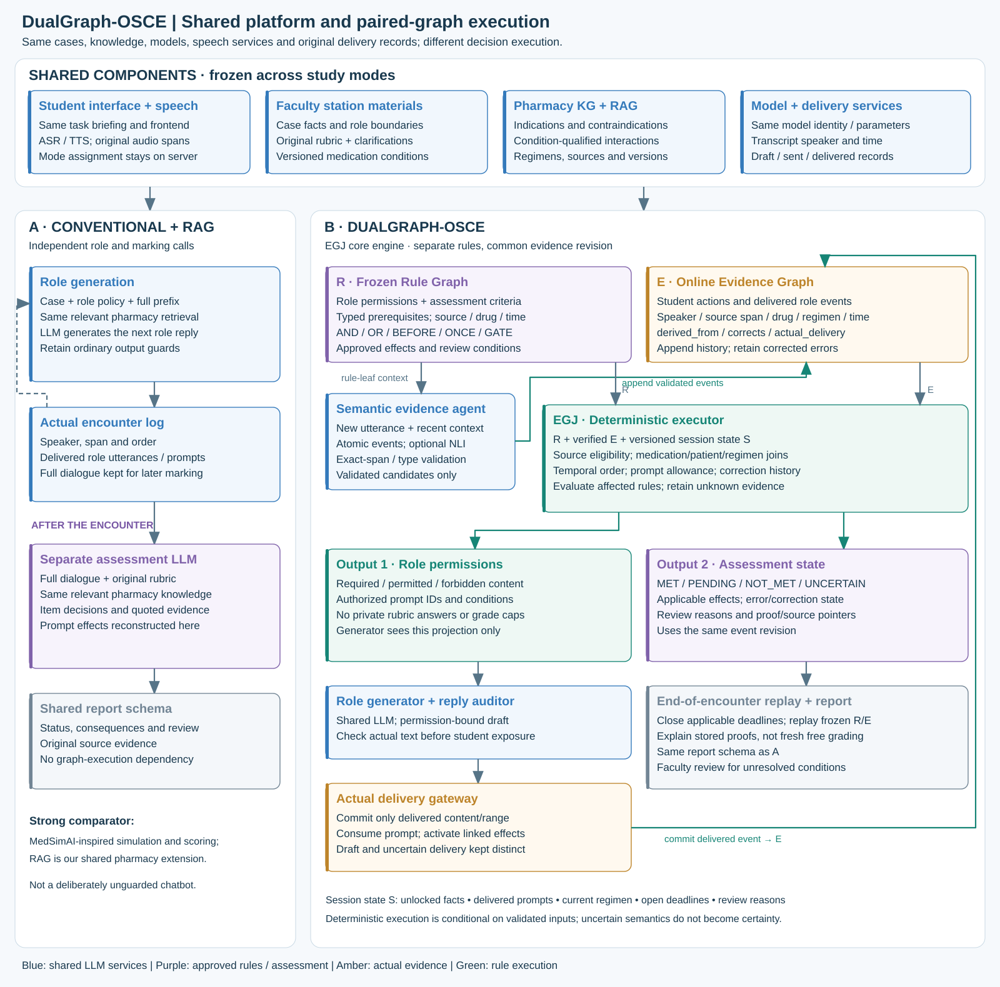
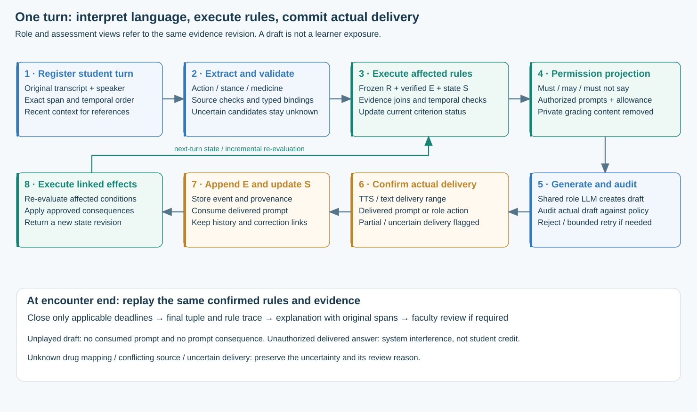

Before the AI speaks
Has the student already demonstrated the requirement? If not, do this station’s conditions permit a prompt?
Synchronizing Clinical Role Simulation and Deterministic Assessment via Paired Rule-Evidence Graphs
What the AI says affects what the student has demonstrated. DualGraph-OSCE records this connection explicitly: one Rule Graph, one Evidence Graph, two coordinated decision outputs.
An AI doctor who supplies a missing clue has done more than keep a conversation moving. The student may now answer correctly because of that clue. A reliable system must decide whether the clue was permitted, record whether it was actually delivered, and apply the station’s marking consequence.
Has the student already demonstrated the requirement? If not, do this station’s conditions permit a prompt?
Was a designated prompt really delivered, or was it merely a draft or an ordinary clarification?
Was the answer independent, prompted, quoted from the role or a correction of an earlier recommendation?
MedSimAI uses instructor-authored cases for conversational patient simulation and a separate assessment framework that produces rubric-based, quote-grounded feedback. Its architecture is a useful starting point, rather than an unconstrained chatbot comparator. [R34·1] [R34·2] Our comparator adds the same pharmacy RAG resources used by DualGraph-OSCE; that addition is our baseline specification, not a component attributed to the original MedSimAI paper.
A conventional system can read the full history, role policy and rubric and reach the correct judgement. The research question is whether compiling the shared conditions into executable rules improves reliability across wording, prompt timing, medicine references and corrections. It is not a claim that separate LLM calls necessarily fail.
Brügge et al. provide randomized evidence for LLM patient simulation with structured post-encounter feedback in a medical-training task. [R40·2] [R40·3] This supports educational plausibility; it does not establish exact automated grading or the superiority of synchronized graph execution.
| Published observation | What it supports here | Boundary |
|---|---|---|
| Pharmacy students and faculty reported overly knowledgeable simulated patients, excessive initial disclosure and feedback that needed stronger pharmacotherapy coverage. [R03·2] [R03·3] | Evaluate disclosure permissions separately from factual correctness. | A qualitative study establishes the reported problem, not its frequency or architectural cause. |
| MedSimAI independently compared automated and human ratings; exact score agreement and proficiency-threshold classification answer different questions. [R34·3] [R34·4] | Use exact decision agreement and original-utterance evidence, not a broad “good feedback” judgement. | Its threshold accuracy is not an exact-match target for our pharmacy rubric. |
| French OSCE evaluation distinguishes information present in a dialogue from information obtained or confirmed by the student and uses programmatic composition of criteria. [R14·2] [R14·4] | Track eligible student evidence and make composite rules explicit. | Attribution and AND/OR composition are existing methods, not our standalone novelty. |
| Long-context studies find that evidence position, distractors and indirect associations can affect model performance. [R36·1] [R38·2] [R38·4] | Test whether the relevant evidence is found and linked under realistic context. | They do not prove that this platform exceeds a context window or that graph compression alone improves accuracy. |
In an illustrative onychomycosis checkpoint, the student has offered substantive advice but has not addressed the itraconazole–atorvastatin interaction. The doctor’s designated prompt is still available. If the doctor uses it and the student then gives the required explanation, the item can be completed while the station’s approved prompt-related cap still applies.
Two results follow from one delivered event: the role cannot reuse that prompt, and the assessor must preserve “completed after prompting”. If the prompt was only drafted, neither effect should be recorded. The C+ cap in the worked example follows the existing CUHK rule; it is not a universal penalty for any patient question. Explore the worked example.
Compile role permissions and assessment requirements into a Rule Graph. Match them to source-linked, time-ordered, medication-bound events in an Evidence Graph. Use the same event revision to decide what the AI may say and what the student has demonstrated.
DualGraph-OSCE is the framework name. Evidence-Graph Judge (EGJ) is its execution engine. The two names describe one method and one paper.
Disclosure triggers, permitted prompts, evidence conditions, medicine/patient bindings, temporal constraints and the faculty rubric. Its version is frozen; rule activation changes in session state.
Speaker, exact source span, action, medicine, regimen, time, delivered prompt and correction links. Historical events are retained.
Role rules and scoring rules are separate nodes. They share events and explicitly linked prerequisites. The role generator receives the permission projection, not private answer keys or grade caps. “Synchronizing” means a common event revision and rule execution; it does not require two models to run simultaneously.
| Contribution | Algorithmic change | Evidence needed |
|---|---|---|
| Shared, qualified evidence conditions | Define completion once through speaker/action eligibility, medicine–patient–regimen joins, temporal order and approved clinical conditions. Role triggers and assessment nodes reference that condition. | Fewer mismatches in role compliance and exact assessment decisions under controlled source, timing and binding variations. |
| Delivery-aware feedback between permissions and consequences | A verified delivered prompt consumes its allowance and activates its linked rubric consequence. A correction updates the current regimen while preserving the earlier error. Drafts do not count as interventions. | Full versus edge-unlinked replay on identical extracted graphs, with controls showing unrelated decisions remain unchanged. |
GSR already compiles typed rubric graphs and deterministic aggregations; LogiDebrief already combines LLM semantics and temporal logic; graph evaluation and runtime monitors provide other useful foundations. [R07·1] [R24·1] [R35·2] Graph-based patient-state rule execution also predates this framework in physiological simulation. [R45·1] [R45·2] Our claim is a pharmacy-OSCE execution method connecting these conditions across controlled role interventions and student assessment, not the invention of graphs, logic, NLI or evidence citation. Compare the closest methods.
The conventional and DualGraph modes use the same interface, ASR/TTS, cases, approved pharmacy knowledge, retrieval service and language-model versions. DualGraph adds a compiled Rule Graph, a validated Evidence Graph and the EGJ executor between shared semantic processing and the two decision outputs.

| Store | Contents | Update policy |
|---|---|---|
| Approved pharmacy knowledge K | Medicine identities, indications, contraindications, condition-qualified interactions, approved regimen information and source/version references. | Curated outside the encounter; snapshot frozen for both study modes. |
| Rule Graph R | Role disclosure/trigger nodes and assessment criteria; typed evidence requirements; AND/OR/k-of-n, BEFORE, ONCE, DEADLINE and approved consequence dependencies. | Compiled from the station materials and faculty decisions before testing; the graph definition is not rewritten during a session. |
| Evidence Graph E | Source-linked utterance events, advice/quotation/confirmation stance, medicine–patient–regimen bindings, delivered prompts and corrects/derived_from relations. | Append-only encounter evidence, including correction relations; no deletion of real historical errors. |
| Session state S | Active conditions, unlocked facts, prompt reservations/delivery counts, current regimen, open deadlines and unresolved review reasons. | Versioned instance state updated by the executor; not a replacement for original evidence. |

Extracts atomic events with verbatim-span pointers and optional NLI support. It may read recent context to resolve “this medicine”, but cannot invent events or award marks.
The generator receives permitted content. The auditor checks the actual draft against a platform-owned permission snapshot. Only approved delivery updates exposure and prompt counts.
Explains stored rule traces and source spans after the deterministic result. It cannot replace the result with a fresh free-form grade.
Model versions, call counts, input budgets, retries and response times must be logged. They are implementation costs, not additional headline innovations. Implementation contracts and mode switching.
Student“Methotrexate once daily.”
AI patient“So I take it once a day?”
Student“Let me correct that: once a week, not every day.”
This is an illustrative trace in the existing CUHK MTX counselling station, not a collected result and not general prescribing guidance.
| Event | Source and action | Medication content | Relation |
|---|---|---|---|
| E1 | Student; adopted recommendation | MTX, daily | Current proposal at this time; conflicts with this station’s frequency requirement. |
| E2 | Patient; confirmation | Echoes MTX, daily | derived_from E1; not student evidence and not a clinical endorsement. |
| E3 | Student; explicit correction | MTX, weekly | corrects E1; supports the updated current frequency. |
Two primary outcomes measure the proposed mechanism. They do not measure student learning gain or establish equivalence to a human-run OSCE. The five role checks and the exact-match tuple below are study-specific operational definitions grounded in the approved station requirements and assessment-validation literature. [R01·1] [R17·1]
“First-run” is the first prespecified execution after a frozen history. It is not the first utterance of the whole consultation and not the best of repeated runs.
Correctly judging an incorrect student answer counts as agreement. A matching item status with a missing cap or incorrect review reason does not.
| Check | What is checked | Failure example | Important exception |
|---|---|---|---|
| 1. Required response | Answer a question or disclose a fact only when the station makes that response obligatory at the checkpoint. | Omitting a required response, evading it or answering a different question. | An optional hint or an unasked, locked fact need not be volunteered. |
| 2. Case fidelity | Keep identity, medical history, medicines and the role’s current knowledge consistent with the station. | Inventing facts, importing another case or treating a superseded regimen as current. | Repeating an instruction just received is not automatically an independent clinical claim. |
| 3. Disclosure permission | Use only content and actions allowed to this doctor or patient at this time. | Revealing an expected answer, private marking rule or fact before its disclosure condition. | An authorized clarification is not leakage simply because it contains a medicine name. |
| 4. Provenance and time | Use only preceding events and distinguish advice, quotation, confirmation and correction. | Using future turns; mistaking student-taught information for prior patient knowledge; ignoring an explicit correction. | Confirming “daily?” differs from endorsing “daily is safe”. |
| 5. Prompt control | If a designated prompt is used, check its target, trigger and remaining allowance. | Prompting an already completed item, repeating a used prompt or using it before its trigger. | An unplayed draft is not a delivered prompt; ordinary questions are not automatically penalized hints. |
Before execution, the checkpoint card states the concrete requirement and which of the five categories apply. Non-applicability must follow the frozen input and faculty policy, not the model output. In technical replay, “finalized” means the response selected after the prespecified audit/retry policy; the 240 offline responses do not need to be played to learners. Actual delivery is a separate live-event property. A valid reply passes only if all applicable checks pass; one violation makes that checkpoint 0. Failed generation also counts as 0. Optional content not volunteered is not an omission.
| Field | Values or representation | Exact-match rule |
|---|---|---|
| Requirement status | MET / PENDING / NOT_MET / UNCERTAIN / N/A | MET requires eligible evidence. PENDING means the observation window remains open; it is not a failure. UNCERTAIN means the available evidence cannot support a reliable decision. |
| Applicable consequences | A normalized set of faculty-approved cap, penalty or automatic-failure rule IDs; NONE if no effect applies. | Compare the entire applicable set, including its scope. A correctly detected answer with a missing cap is not an exact match. |
| Error and correction state | No error / unresolved / explicitly corrected, with event links and current regimen. | Keep a real historical error after correction; do not treat it as permanently unresolved. A patient’s correction does not become a student self-correction. |
| Review requirement | No review, or the applicable predefined reason set, including system interference or uncertain delivery. | An unauthorized answer delivered by the AI may require review; do not automatically reward or penalize the student for the system’s intervention. |
Each checkpoint targets one preselected criterion and its applicable effects. Compare normalized sets, not wording of explanations. Record source event IDs and rule traces for audit; require valid references, but do not demand one uniquely worded evidence selection when several equivalent spans exist.
Role: valid output AND all applicable checks pass. Assessment: valid output AND all four applicable fields agree. Missing output remains in the denominator. Faculty-ambiguous rules must be resolved before freezing the benchmark; later unexpected ambiguity is reported, not quietly removed.
This abbreviated demo uses one consequence and a binary review flag. The formal comparison checks normalized consequence and review-reason sets, as defined above.
Illustrative faculty reference: the student completed the interaction item after a delivered authorized prompt; the station applies CAP_CPLUS; there is no unresolved error and no review reason.
| Field | System output | Match |
|---|---|---|
| Status | ||
| Consequence | ||
| Revision | ||
| Review |
This example has three applicable checks in addition to a valid finalized output; the full benchmark still covers the five categories above.
If a system passes 102 of 120 frozen checkpoints, its role compliance is 102/120 = 85%. If the complete decision tuple matches the teacher in 108 checkpoints, its exact agreement is 108/120 = 90%. These are arithmetic examples, not experimental results. A/A-or-B paired outcome table and uncertainty intervals are required before claiming improvement.
Report premature-disclosure violations, required-response omissions, prompt violations and correction mistakes as secondary error counts with their own eligible denominators. Repeated-run stability is separate: identical repeated errors are stable but not correct. Paired comparison and clustered uncertainty.

Target 30 per station. Both systems receive the same frozen prefix and cutoff. Obtain one next-role reply and one current criterion decision from each.
Replay the same validated graph with the delivered-role-intervention → assessment-consequence dependency disabled. Keep the events and unrelated rules.
A target source corpus and feasibility cohort, not necessarily 16 students. Preserve participant/session IDs and distinguish real from constructed checkpoints.
| Station | Role / task | Preselected criteria | Mechanism |
|---|---|---|---|
| C1 · Onychomycosis | AI doctor; student provides drug information | Heart-failure-related suitability (F05); itraconazole–atorvastatin interaction (F06); alternative (F07); approved dose/course (F08). | Prompt-dependent consequences and separate safety conditions. |
| C2 · Migraine | AI doctor; student discusses treatment | Allergy inquiry (M04); patient-specific contraindication (M07); alternative (M09); instructions for the selected medicine (M10). | Inquiry before the first adopted recommendation; medicine/regimen binding. |
| C3 · Diuretics | AI patient; student provides counselling | Allergy inquiry (D02); rosuvastatin instructions (D04); frusemide instructions (D08); heart-failure/self-care explanation (D18). | Keep the two medicines distinct. Ordinary patient questions do not create an invented prompt penalty. |
| C4 · Methotrexate | AI patient; student counsels on MTX and folic acid | Weekly MTX frequency (T05); missed-dose handling (T06); separate folic-acid schedule (T08); no double-dose advice (T14). | Distinguish omission from a real wrong recommendation, patient echo from student evidence, and corrected from unresolved errors. |
Thirty checkpoints per station is a balanced planning allocation, not a universal statistical minimum. If several checkpoints come from one consultation or one edited script family, the effective independent sample is smaller; analysis must preserve those clusters.
Complete experimental protocol Interactive worked examples
Faculty tasks and forms · Student briefing · Usability questionnaire · Published IEEE education methods
An AND condition with an unresolved operand cannot establish completion. Failure to find a drug relation does not establish “no interaction”. Knowledge conflicts or missing qualifiers lead to uncertainty and appropriate review. Executable schemas and operating boundaries.
Keywords: pharmacy education; OSCE; virtual standardized patient; neuro-symbolic assessment; evidence provenance; rule graph.
Objective Structured Clinical Examinations (OSCEs) support the assessment of clinical performance, but standardized-patient availability and examiner workload constrain repeated practice. LLM-based simulations offer flexible encounters and automated feedback. However, maintaining a complete transcript does not by itself ensure consistent interpretation of what the simulated role may disclose and what the student has independently demonstrated. This distinction is particularly important in pharmacy stations involving medication-specific instructions, interactions, contraindications, authorized prompts and corrected recommendations. We propose DualGraph-OSCE, a neuro-symbolic framework that synchronizes role control and assessment through paired Rule and Evidence Graphs. The Rule Graph compiles faculty-defined disclosure permissions, temporal conditions and rubric consequences; the Evidence Graph records source-linked student actions, delivered role utterances, prompts and self-corrections. Its Evidence-Graph Judge separates semantic evidence matching from deterministic execution of confirmed rules, producing a role-permission view and an assessment view from the same event revision. We specify a paired technical evaluation of 120 frozen dialogue checkpoints across four CUHK pharmacy stations, complemented by a target corpus of 16 live consultations. A MedSimAI-inspired, RAG-augmented conventional system serves as the comparator, with shared cases, knowledge, models and delivery records. Faculty-referenced first-run role compliance and exact assessment-decision agreement are the primary outcomes. A targeted edge ablation examines the effect of linking delivered role interventions to assessment consequences. The study is designed to establish whether explicit, shared evidence conditions improve auditability and decision reliability; empirical performance results remain to be collected.
This is a study-design abstract. The 16 consultations and 120 checkpoints are target quantities. Claims such as “eliminated leakage”, “superior consistency” or “exact concordance” require completed faculty-referenced results and confidence intervals before they can appear in the submitted abstract.
| Section | Main argument | Key evidence |
|---|---|---|
| I. Introduction | Traditional OSCE resource constraints; AI simulation and feedback; role actions alter evidential conditions in pharmacy encounters. | ASPE, pharmacy simulation review, Bakhaya, MedSimAI; attachment RCT as supporting evidence. |
| II. Related Work | Role control; knowledge-grounded simulation; graph rubrics and temporal evaluation; precise contribution boundary. | AIPatient, GSR, LogiDebrief, French OSCE work, ArgRAG and the new clinical KG studies where relevant. |
| III. DualGraph-OSCE | Rule/evidence schemas; shared qualified evidence; delivered-event feedback; separate role and assessment projections; worked MTX and prompt traces. | Faculty station policies plus closest algorithmic precedents. No claim that deterministic execution removes semantic uncertainty. |
| IV. Study Design | Shared-component comparator; 120 paired checkpoints; two primary outcomes; gold references; targeted ablation; live feasibility. | Published expert-reference and component-comparison methods; explicit sample-size assumptions. |
| V. Results | Role compliance, exact decision agreement, paired differences, error categories, ablation and feasibility; all failures retained. | Only measured outputs, independent faculty annotations and reproducible calculations. |
| VI. Discussion and Limitations | Educational meaning, clinical/assessment scope, faculty workload, extraction errors, cluster dependence and generalization. | Four fixed stations and a small cohort cannot establish learning gain, high-stakes validity or human-OSCE equivalence. |
| VII. Conclusion | Summarize only the contribution and benefits demonstrated by the completed study. | No untested superiority, universal safety guarantee or “first” claim. |
ASR/TTS remain shared infrastructure in this paper. Pharmacy hotword adaptation and TER belong to the separate speech-recognition study, not a third DualGraph-OSCE outcome.
Each reading explains the research question, design, findings, limits and its specific use in DualGraph-OSCE. The linked original publication and highlighted PDF passages allow the claim to be checked in context. Not every archived paper belongs in the final bibliography: cite only sources actually used for the argument or method.
Attachment papers: relevance and corrected citation claims Source-passage index · BibTeX
Role fidelity and consistent assessment are professional requirements; define the two outcome domains.
Establish the pharmacy-education use of virtual patients; avoid equating reported teaching benefits with algorithmic accuracy.
Direct pharmacy evidence for premature information disclosure and limitations of automated feedback.
Knowledge-grounded multi-agent patient simulation; justify a strong retrieval-enabled comparator.
Selective disclosure and personality control are existing approaches; place the role-control increment accurately.
Controllable patient dialogue and OSCE data; distinguish dialogue control from joint rubric execution.
Closest precedent for compiling typed rubric graphs and deterministic composition.
Evidence-grounded judging and calibration; compare evidence qualifications and score control.
Graph-based output verification; separate factual entailment from demonstration of a student skill.
Runtime temporal guardrails; frame online control as an existing foundation.
Explainable support/attack evidence reasoning; do not treat a bipolar graph as a new invention.
Graph-driven multi-turn clinical judging; distinguish agent evaluation from fixed human-student OSCE rubrics.
Multi-turn clinical evaluation dimensions and benchmark design; support condition-aware assessment.
Student-source eligibility and composite OSCE criteria; a direct assessment-method comparison.
Pharmacy-specific arguments and context-qualified medication risks; support drug/patient/regimen bindings.
Structured healthcare rubrics; clarify which judge/rubric capabilities already exist.
Assessment-validity framework; restrict claims to the interpretation supported by collected evidence.
Sample-size justification; report assumptions and precision rather than a universal minimum.
OSCE generalizability and station effects; do not treat checkpoints as independent learners.
Patient-counselling rubric reliability; separate faculty agreement from model correctness.
ICC assumptions if continuous scores are additionally studied; not a substitute for exact tuple agreement.
Human-reference OSCE scoring and repeated model runs; distinguish accuracy from repeatability.
Medication assessment dimensions; justify clinical-condition schema, not a newly invented scoring rubric.
LLM semantics with temporal logic and controlled traces; nearest temporal debriefing comparison.
Power-analysis principles; parameterized planning, not authority for exactly 30 checkpoints.
Connect educational claims to appropriate evidence in an IEEE education manuscript.
Same-task knowledge-graph context comparisons; motivate a fair controlled technical comparison.
Expert review of education knowledge graphs; support approved rule compilation.
Human reference and component/feature comparisons; inform an explicit mechanism test.
Multi-agent component ablation; adapt the principle without copying its task or sample size.
Knowledge-graph component comparisons in education; distinguish knowledge access from execution changes.
Questionnaire and qualitative educational feedback; support feasibility rather than clinical accuracy.
Perceptions and adoption of LLM feedback; supplement objective faculty-reference outcomes.
Primary architectural baseline and independent scoring validation; keep its strengths in the comparator.
Object-bound temporal monitoring; disclose that typed online rule execution has prior art.
Position-sensitive long-context evidence use; motivation, not proof of failure in the CUHK system.
Task-specific effective context capacity; separate retrieval, aggregation and reasoning.
Indirect evidence associations under long context; motivate source/condition linking.
Memory extraction and retrieval trade-offs; preserve source spans and test information loss.
Introduction: explain why LLM patient simulation is educationally plausible. Related work: describe prompt-based simulation followed by structured feedback. Evaluation: justify blinded faculty review of transcripts, while choosing absolute decision agreement rather than borrowing the study’s human-rater consistency ICC.
Evaluation methods: define faculty-reference item agreement. Related work: distinguish assessment-only virtual-SP systems from systems that also generate role dialogue. Limitations: explain why score accuracy does not establish patient-role accuracy.
Related work: clinical KG-grounded generation. Baseline description: justify document- or graph-retrieval support in the conventional method. Evaluation methods: support paired binary comparisons, confidence intervals, and independent clinician annotation.
Related work: domain KG-assisted QA and structured extraction. Method rationale: explain why semantic matching and logical execution have different responsibilities. Use this citation only if the paper discusses the clinical KG layer in enough detail.
Introduction: one sentence situating virtual simulation in education. Discussion and limitations: distinguish technical fidelity, participant experience, learning, and clinical transfer.
Related work: clinical graph-driven simulations and temporal expert rules. Method: explain the separation between faculty-confirmed rule content and executable engine logic. Discussion: state what is added beyond existing rule-driven patient-state simulations.